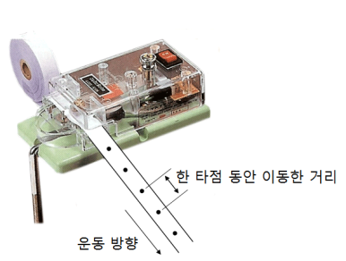
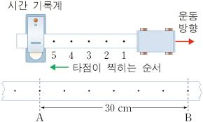

시간 기록계(recording timer)
위치: 4층 뉴턴실 교실 2번장
일정한 시간 간격으로 종이테이프에 타점을 찍어 물체의 운동을 기록하는 장치

사용방법
준비물: 종이테이프, 시간기록계 장치

1. 보통 1초 60타점을 찍는 시간 기록계의 진동수를 60Hz라 한다. 2. 종이테이프를 분석할 때는 일정한 타점 단위로 구간을 나누어 운동을 분석한다. 각 구간의 길이는 속도를 의미한다.